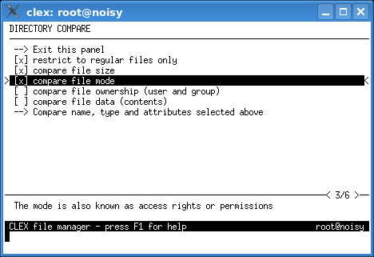

Files in the current working directory (primary panel) and files in the secondary working directory (secondary panel) are compared with each other and the differences are marked with selection marks.
Files which are the same in both directories are not selected and files which do not appear in both directories or which are different are selected.
The comparison can be restricted to regular files only. Files that do not meet this condition (e.g. directories) are left unselected.

In the simplest comparison, two files are equal if they have the same name and the same type. In addition to this, several other attributes can be selected for comparison:
Comparing large amounts of data may take a long time. You can press the ctrl-C key to abort the comparison at any time.
A comparison summary is displayed afterward.